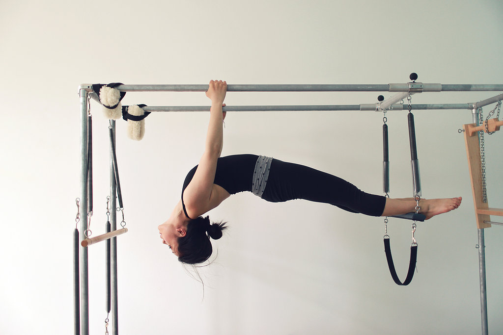
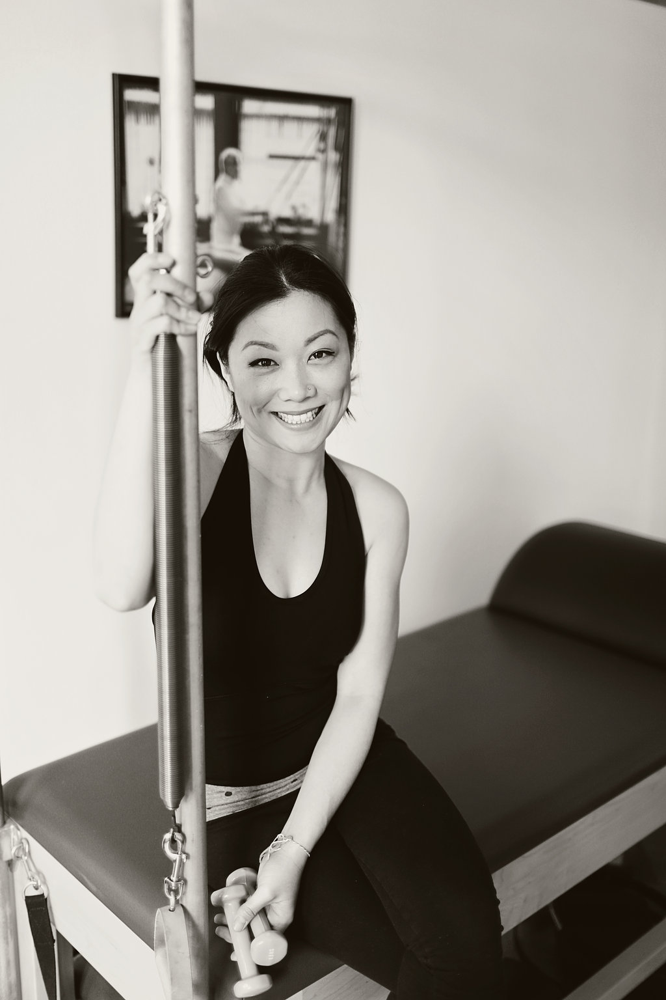
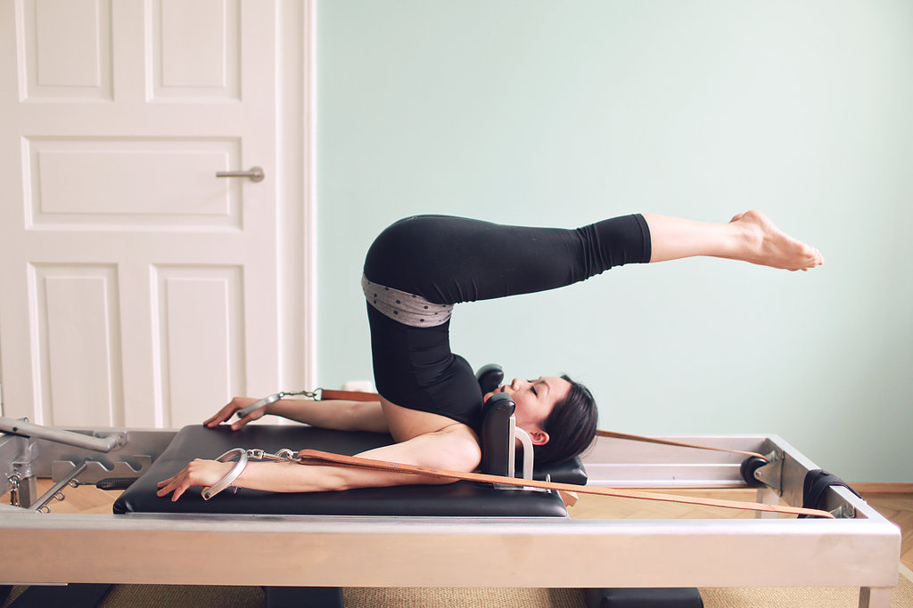
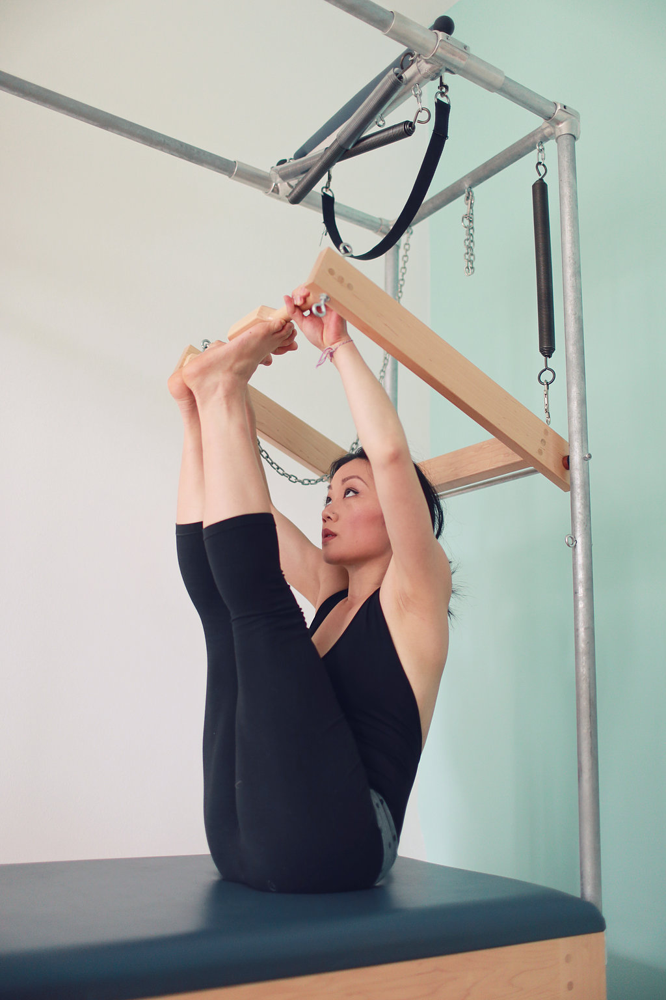
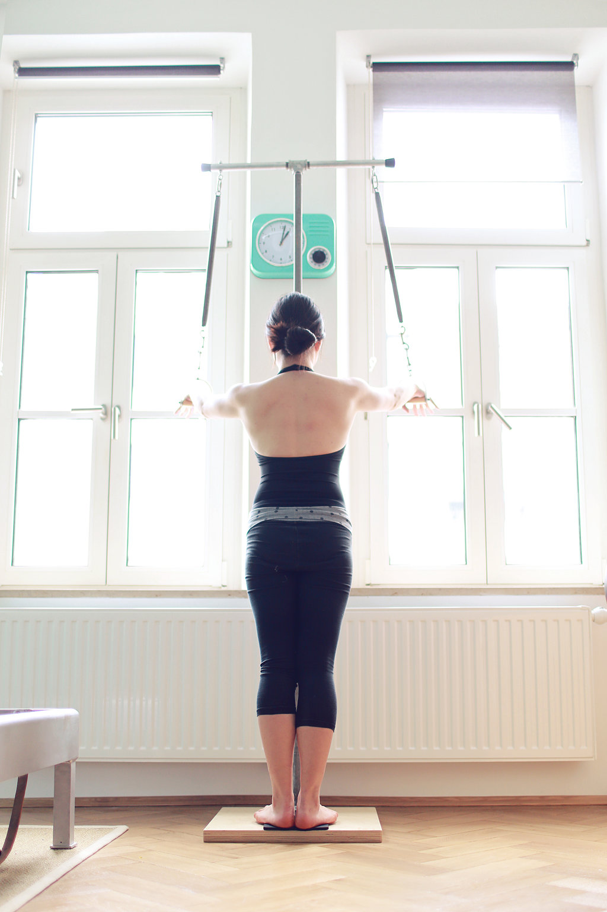

Telefon: +49 174 8238738
EMail: rebellpilates@pm.me
Telefon: +49 174 8238738
EMail: rebellpilates@pm.me

Willkommen bei Rebell Pilates, wo das originale Körpertraining von Joseph Pilates unter voller Diskretion praktiziert wird. Pilates hat seine Methode entwickelt und Contrology genannt, um das strukturelle Gleichgewicht wiederherzustellen, den Körper auf intelligente Weise zu stärken und eine echte muskuläre Kontrolle zu entwickeln. Der Ansatz ist korrigierend, präzise und systematisch verwurzelt. Unser Unterricht folgt der traditionellen Methode auf authentischen Geräten, basierend auf den Patenten von Joseph Pilates. Jede Bewegung baut auf der vorherigen auf. Der Ablauf ist fließend und logisch. Jede Einheit hat einen Zweck. Dies ist diszipliniertes Training für langfristige strukturelle Gesundheit und Fitness. Wir stellen Qualität über Quantität. Bei Rebell Pilates Pilates ist jede Trainingseinheit Teil eines disziplinierten Systems, das auf strukturelle Integrität, funktionelle Kraft und lebenslange Beweglichkeit ausgerichtet ist.
Erlebe originales Pilates so, wie es unterrichtet werden sollte, mit Präzision, Fokus und Integrität. Wenn dir personalisiertes Training und langfristiges Fitness wichtig sind, ist Rebell Pilates für dich richtig. Der Name „Pilates“ ist rechtlich nicht geschützt und Rebell Pilates ist das einzige ausgestattete Studio in München, das nach der ursprünglichen Methode aus dem New Yorker Gym unterrichtet.

Hubertus Joseph Pilates (1883-1967) entwickelte im 20. Jahrhundert eine Bewegungstechnik, die sich als Zwei-Wege-Dehnung mit starkem Zentrum zusammenfassen lässt. Sie stärkt die Rücken-, Rumpf-, und Bauchmuskeln, da alle Bewegungen aus der Mitte entstehen. Die Methode wird auf mehreren speziellen Geräten ausgeführt, so dass das neuromuskuläre Gedächtnis lernt, die Technik in verschiedenen Situationen anzuwenden. Die Sprungfedern assistieren die Muskeln und fordern sie gleichzeitig heraus, ohne die Gelenke zu belasten. Haltung, Beweglichkeit, Koordination und Kraft verbessern sich ganz natürlich durch die Übungen selbst. Contrology ist so konzipiert, dass die korrekte Ausrichtung und strukturelle Korrektur in jede Bewegung integriert sind, wodurch sicherere Bewegungen, schnellere Fortschritte, nachhaltige Ergebnisse und ein geringeres Verletzungsrisiko gewährleistet werden.
Menschen beginnen mit Pilates Training zur Haltungskorrektur, zur Linderung chronischer Beschwerden, zur Verbesserung der Beweglichkeit, für mehr Rumpfstabilität und langfristige Kraft. Sie bleiben dabei, weil die Veränderungen messbar, funktional und nachhaltig sind.

Alice R. Talkington trainierte u.a. mit vormaligen Schülern von Pilates wie z.B. Jay Grimes (1940-2024) und Edwina Fontaine (1928-2014). Nach der Ausbildung hat Alice in London, Genf, Wien und München als Instrukteurin gearbeitet. 2015 veranstaltete sie Deutschlands ersten großen Kongress für Contrology mit Gratz Pilates (gratzpilates.com) als Equipment Sponsor. Während Alices vierjähriges Aufenthalts in Berlin war ihr Coach Moses Urbano (www.accesspilates.com), ein Protégé von Romana Kryzanowska, die nach dem Tod von Pilates die Führung des originalen Studios übernommen hatte. Bevor sie Rebell Pilates 2024 in Regensburg gründete, war Alice in Frankreich, Hong Kong und USA tätig. Sie ist eine Spezialistin für darstellende Künstler. Zu ihren ehemaligen Kunden gehören Christine Kaufmann, Opernsängerin Albina Shagimuratova, Schauspielerin Astrid Posner, Musiker David Alan Cooper und Schriftsteller Benjamin von Stuckrad-Barre. Zudem hat Alice mit Profisportlern gearbeitet, beispielsweise von den Boston Red Sox, dem Bayerischen Staatsballett, und dem FC Bayern. Alice bildet sich fortlaufend mit weltweit renommierten Trainerinnen weiter, u.a. Inelia Garcia, Kathryn Ross-Nash, und MeJo Wiggin.
Rebell Pilates bietet etwas, das in der heutigen überfüllten Fitnesslandschaft selten geworden ist: echtes, originales Contrology, mit Tiefe, Integrität und Zielbewusstsein unterrichtet. In einer Zeit, in der viele Studios Trends, hohe Teilnehmerzahlen oder schnelle Gruppentrainings in den Vordergrund stellen, konzentrieren wir uns auf die Qualität des Unterrichts, nicht auf die Quantität. Unser Ziel ist es, dir zu helfen, die beste Version deines Körpers durch die ursprüngliche, von Joseph Pilates entwickelte Methode zu erreichen – ein ganzheitliches Körpertraining, das auf Präzision, Rhythmus und Kontrolle basiert. Wir bieten keine Variante von Pilates an. Wir bieten Contrology an – so, wie es ursprünglich in Form von Einzeltraining unterrichtet werden sollte. Daher bieten wir ausschließlich privates Training im geschützten Raum an.
Genau so wie man auf einem englischen Sattel nicht Western reiten kann, ist es wichtig, Geräte mit den richtigen Abmessungen und Federspannung zu verwenden, um eine sichere und angemessene Technik zu gewährleisten. Joseph Pilates baute mit seinem Bruder Friedrich eigene Geräte. Insgesamt hatte Pilates 26 Patente. Bei Rebell Pilates trainierst du auf erstklassigen und authentischen Geräten, die nach den Spezifikationen von Joseph Pilates produziert werden.




Gesunde Menschen ohne akute Verletzungen beginnen ihr Training in der Regel am Universal Reformer. Die vier gleichmäßig gespannten Federn geben dabei Orientierung und ermöglichen es der Trainerin, deine Körperausrichtung präzise wahrzunehmen und unmittelbar zu korrigieren. Bequeme Sportkleidung, die die Knöchel frei lässt, ist dafür ideal. Bitte verzichte auf Reißverschlüsse, da diese den Polsterbezug beschädigen können. Während des Trainings werden Socken getragen. Ein Handtuch und eine Wasserflasche kannst du gerne mitbringen.
Der Reformer bildet das Herzstück des Trainings. Von hier aus lernst du nach und nach verschiedene Mattenübungen kennen, die du auch zu Hause praktizieren kannst. Eine regelmäßige Übungspraxis unterstützt dabei, das Gelernte zu festigen und Fortschritte nachhaltig in den Alltag zu integrieren. Im weiteren Verlauf werden die verschiedenen Geräte des Studios einbezogen, um deine Arbeit am Reformer zu vertiefen.
Jede Einheit wird individuell auf deinen Körper, deine Tagesform und deine persönlichen Ziele abgestimmt. Die Trainerin setzt einen klaren Schwerpunkt und begleitet dich präzise durch das Training. Eine Einheit dauert in der Regel 50 Minuten.Richtig ausgeführt, unter fachkundiger Anleitung und mit authentischen Geräten, ist Contrology weit mehr als ein Training. Es ist eine langfristige Investition in körperliche Gesundheit und Lebensqualität. Mit jeder Einheit entwickelst du ein besseres Verständnis für deinen Körper und dafür, wie du die Prinzipien von Contrology in deinen Alltag integrieren kannst.
Ob kurzfristige Ziele wie Rückbildung, die Vorbereitung auf einen Skiurlaub oder eine neue Sportart, mittelfristige Ziele wie die Reduzierung von Rückenschmerzen oder die Vorbereitung auf einen Marathon oder langfristige Ziele wie der Erhalt von Kraft und Beweglichkeit: Teile deine persönlichen Ziele bei der Terminvereinbarung mit. So kann das Training individuell auf dich und dein Leben abgestimmt werden.
"Ich hatte schon immer mit Problemen im unteren Rücken und im Schulterbereich zu kämpfen, aber das Training mit Alice hat für mich einen echten Unterschied gemacht. Seit ich mit ihren Pilates Einheiten begonnen habe, hat sich meine Haltung spürbar verbessert und ich merke einen deutlichen Unterschied in meiner Kraft. Alices fundiertes Wissen über den menschlichen Körper zeigt sich in jeder Einheit. Durch ihre Expertise stellt sie sicher, dass jede Übung sowohl effektiv als auch sicher ist. Außerdem schafft sie es auf eine tolle Art und Weise, die Einheiten abwechslungsreich und motivierend zu gestalten, sodass ich mich jedes Mal darauf freue. Ich kann Alice jedem wärmstens empfehlen, der auf der Suche nach einer kompetenten, einfühlsamen und unterstützenden Pilates Trainerin ist!"
"Pilates hat mir geholfen, fokussierter zu sein und meine innere Mitte zu finden und dabei ruhig und gelassen zu bleiben. Ich glaube, dass mir Pilates den entscheidenden Vorteil verschafft hat, als ich mich auf ein wichtiges Vorsprechen vorbereitet habe und auch dabei, im Beruf über mich hinauszuwachsen. Für mich ist Pilates ein Konzept für ein gesundes Leben, das ich regelmäßig in meinen Alltag integrieren kann. Es wurde entwickelt, um Körper und Geist zu stärken, und man kann es täglich machen, ohne danach völlig erschöpft zu sein und trotzdem ein großartiges Training zu bekommen. Das ist für mich die grundlegende Bedeutung von Pilates in meinem Leben. Ich kehre immer wieder dazu zurück und bin jedes Mal froh darüber!"
"Ich habe schon immer davon geträumt, Pilates auszuprobieren oder zu machen, hatte aber nie die Gelegenheit dazu. Letzten April kam mir ganz spontan der Gedanke, es endlich einmal auszuprobieren. Deshalb habe ich recherchiert, ob es hier überhaupt angeboten wird. Zum Glück bin ich dabei auf Rebell Pilates gestoßen und habe mich darüber informiert. Ich dachte sofort: Das ist perfekt für mich – vor allem, weil es sich um ein individuelles Eins-zu-eins-Training handelt. Daraufhin habe ich Alice direkt eine E-Mail geschrieben – sie ist eine sehr nette und geduldige Person und Trainerin. Das Training hat mir wirklich sehr geholfen, insbesondere im Hinblick auf meine persönlichen Ziele: die Rückenschmerzen zu reduzieren, die ich durch meine Arbeit bekomme, etwas beweglicher zu werden und vieles mehr. Ich kann Rebell Pilates nur wärmstens empfehlen: Die Ausstattung ist perfekt, Alice ist großartig darin, Pilates anzuleiten und zu vermitteln, und die Termine sind sehr flexibel und zeitsparend. Vielen lieben Dank!"
Rebell Pilates befindet sich im Souterrain und bietet Privatsphäre, Diskretion und Ruhe, fernab von überfüllten Fitnessstudios und Gruppenkursen. Große Fenster oberhalb der Räumlichkeiten sorgen für viel natürliches Tageslicht. Neben dem Trainingsraum befindet sich ein separater Umkleideraum mit Dusche.
Das Studio befindet sich in der Georgenstein 14, gegenüber dem Isartal Tennis Park (tennispark-isartal.de) und dem Waldgasthof (www.hotelbuchenhain.de) in Buchenhain. Hinter dem Gebäude steht ein eigener Parkplatz zur Verfügung. Außerdem gibt es ausreichend Parkmöglichkeiten vor dem Gebäude und in den angrenzenden Straßen.
Bitte akzeptiere die externen Medien in den Cookie-Einstellungen, um die Karte zu sehen.